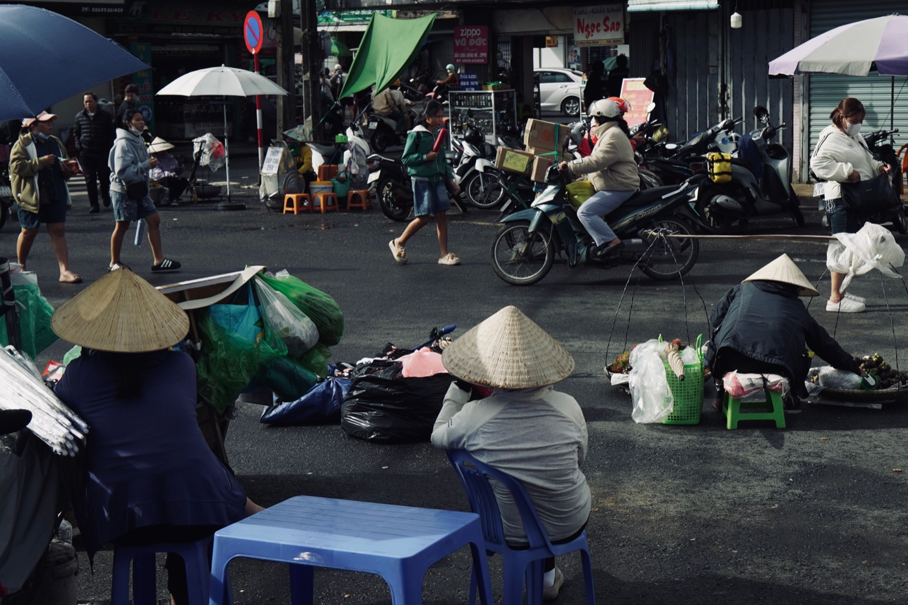

오토바이 구매 후 첫 주

점검과 정비를 마친 오토바이라도 처음에는 낯섭니다. 첫 주는 장거리 주행이 아니라 브레이크, 차체 크기, 연비, 일상적인 세부 사항에 차분히 익숙해지는 시간입니다. 그래야 자신감이 빨리 생기고 문제를 제때 알아챌 수 있습니다.
첫날: 조작부
출발 전에 키 박스, 시트와 연료 캡 여는 법, 상향등, 방향지시등, 경적, 엔진 킬 스위치를 찾아보세요. 어느 레버가 어느 브레이크인지 확인하세요. 키 두 개를 확인하고 번호판, 오토바이 전체, 서류를 사진으로 남기세요.
첫 짧은 주행
익숙한 길을 낮에, 폭우가 없을 때 고르세요. 넓은 곳에서 부드럽게 출발하고 멈추고 몇 번 돌아보세요. 스로틀이 물리는 느낌, 회전 반경, 주차할 때의 무게를 느껴보세요. 조작이 예측 가능해질 때까지 동승자는 태우지 마세요.

몇 번 탄 뒤 확인할 것
- 앞뒤 타이어 공기압과 외관;
- 모델 기준에 따른 오일류 수준;
- 라이트, 방향지시등, 브레이크등;
- 브레이크 레버의 유격과 감각;
- 밤새 세워둔 뒤 새로 생긴 누유;
- 새로운 소리, 냄새, 심한 진동이 없는지.
이상 증상의 원인을 혼자 추측하지 마세요. 짧은 영상을 찍어 정비사에게 보여주세요 — “뭔가 소리가 이상해요”보다 정확한 기록이 훨씬 유용합니다.
주유와 실제 연비
권장 연료와 연료 캡 위치를 기억하세요. 넘치지 않게 주유하고, 트립 미터가 있다면 초기화하세요. 연비는 한 번의 주행으로 판단하지 않습니다: 최소 두 번의 완전 주유 주기 동안 데이터를 모으세요. 방법은 50cc 연비 계산법에 있습니다.
주차와 도난 방지
사이드 스탠드와 센터 스탠드 세우는 연습을 하세요. 집 근처에 고정 주차 자리를 정하고 조명과 주차권 방식을 확인하세요. 핸들 잠금과 보조 자물쇠 사용을 바로 습관으로 만드세요 — 안전을 미루지 마세요.
내 몸에 맞게 세팅
미러를 맞추고, 계기판을 가리지 않는 휴대폰 거치대를 달고, 시트 아래 간단한 키트를 준비하세요. 헬멧이 꼭 맞는지, 우비가 바퀴에 걸리지 않는지 확인하세요. 몇 번 타보기 전에 액세서리를 많이 사지 마세요: 무엇이 정말 필요한지 먼저 알게 됩니다.
정비소에 다시 가야 할 때
브레이크가 나빠지거나, 핸들이 한쪽으로 쏠리거나, 엔진이 꺼지거나, 연료 냄새·누유·과열이 생기면 점검을 미루지 마세요. 일반 점검 때는 주행거리와 관찰한 내용을 미리 적어 가세요. 정비는 해당 모델의 기준과 실제 상태에 따라 합니다.
짧은 결론
첫 주에는 조작을 익히고, 기본 장치를 확인하고, 주차를 정하고, 실제 관찰을 기록해야 합니다. 그다음 점차 거리를 늘리면 됩니다. 매번 출발 전에 2분 체크리스트를 쓰고, 구매 과정은 오토바이 구매 진행 방식을 참고하세요.